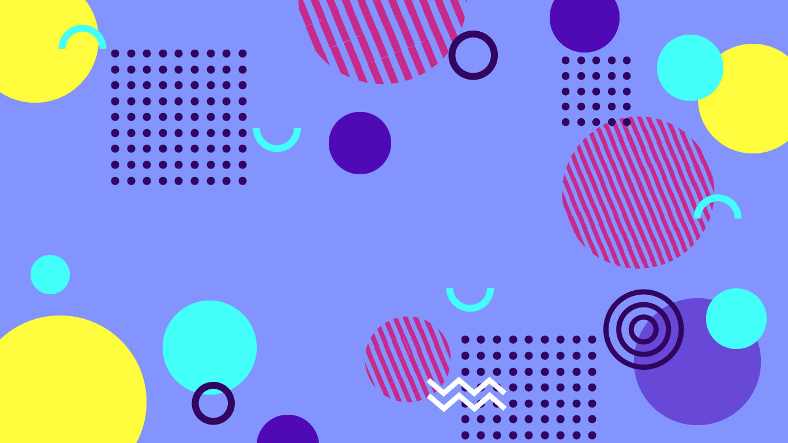
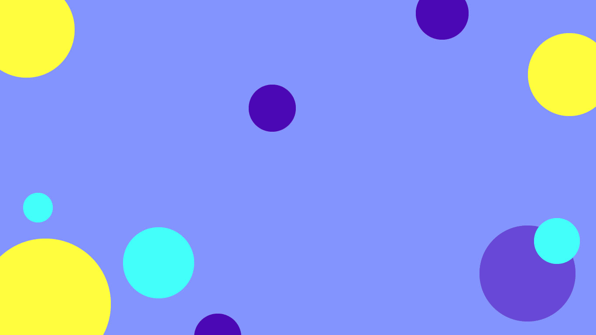

Design with Memphis
As a graphic designer, I follow the new trends in design, and Memphis style is one of the trends that I found could be easily applied in our design. Here is an quick example to show how I use the Memphis style in designing a poster step by step:
1. Color Choices
Choose the bright color, for example
2. Geometric Shapes
As introduced before, the geometric shapes are the primary art element in Memphis, you could use triangles, circles, grids or even the shapes created by yourself

3. Here We Go
